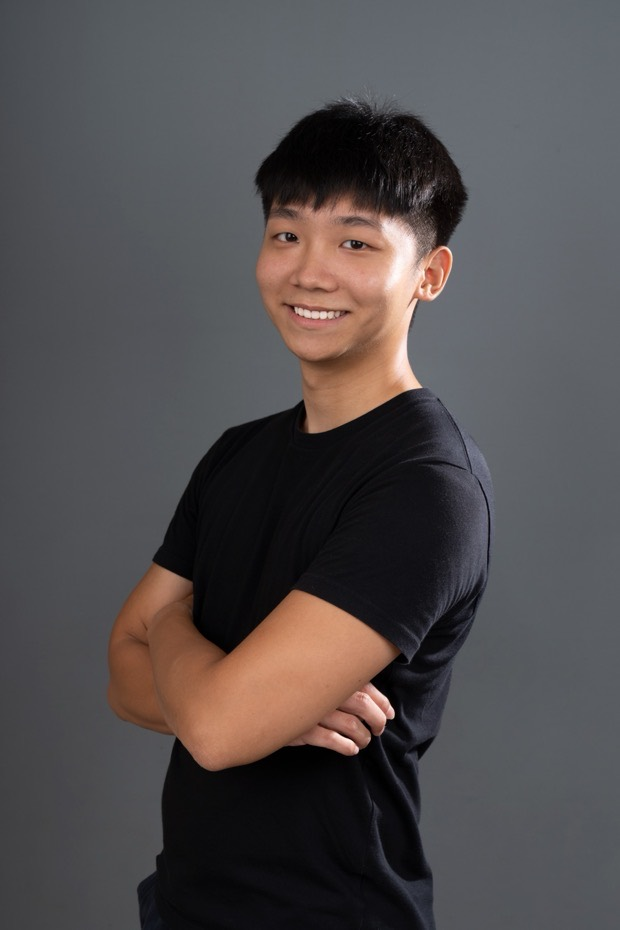
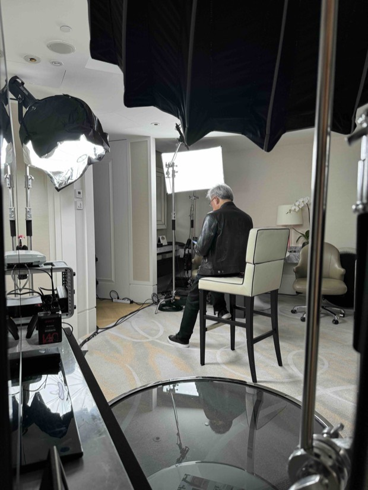
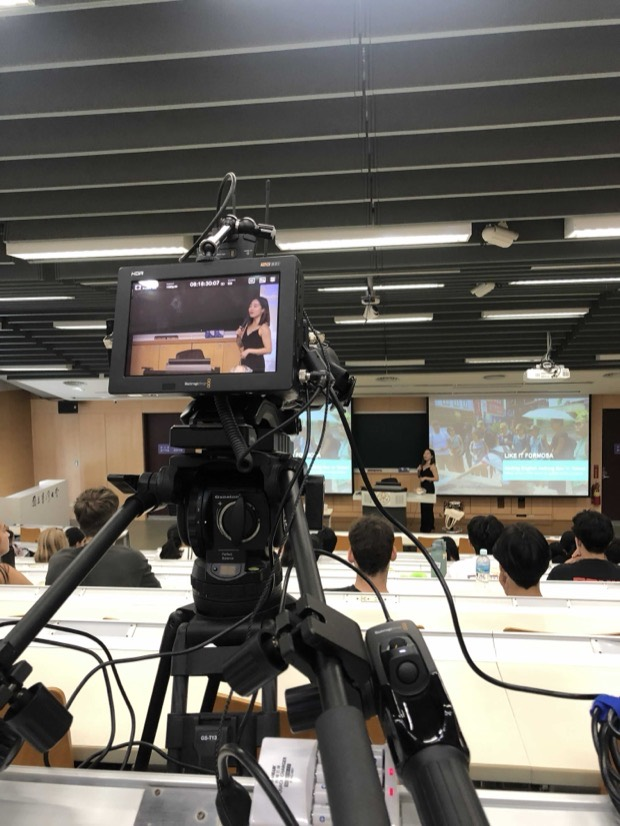

擁有跨國商務視野的全方位技術專家，為企業與品牌打造卓越解決方案與活動體驗。

光房子創意股份有限公司 負責人兼執行總監 （2021.04 ~ 至今）

2024 年六月黃仁勳先生訪臺期間，全球第三大軟體公司 SAP 舉辦全球技術與創新趨勢發表會。譽霖擔任臺灣端的技術負責人，與美國直播團隊事前接洽、測試及綵排，並於活動現場協助 NVIDIA 與 SAP 人員執行跨國連線。
同年十二月黃仁勳先生前往亞洲訪問泰國及越南總理，期間並參與美國《WIRED》雜誌的年度活動 The Big Interview，以及全球半導體聯盟 GSA Awards Dinner 頒獎晚會。由於譽霖具備商務英語能力以及六月對接美方的經驗，獲得客戶信任前往泰國曼谷與越南河內，協助執行兩場跨國連線直播。

光房子自 2021 年成立以來即與臺灣大學學務處合作，目前邁入第五年，為學務處各單位製作「開學典禮」、「新生書院」、「社團聯展」等各式校級宣傳影片。
近年合作範圍從影像製作延伸至活動硬體統籌，包含多機位錄影、現場直播、音響與電力配置的規劃與執行，成為學務處長期倚重的技術夥伴。
| 級別 | 學校名稱 | 科系 | 起訖日期 |
|---|---|---|---|
| 學士（肄） | 國立臺灣大學 | 資訊管理學系 | 2017.09 ~ 2023.09 |
| 學士（肄） | 國立臺灣科技大學 | 電機工程系 | 2015.09 ~ 2016.06 |
| 高中 | 臺北市立大安高級工業職業學校 | 電機科 | 2012.09 ~ 2015.06 |
A globally-minded, multi-skilled tech innovator delivering transformative solutions and event experiences for forward-thinking brands.
Lighthouse Creative Co., Ltd. — Founder & Executive Director (Apr. 2021 ~ Present)
In June 2024, during Jensen Huang's visit to Taiwan, global software giant SAP held its Global Technology and Innovation Trends Conference. YuLin served as the technical lead on the Taiwan side — coordinating pre-meetings, tests and rehearsals with the U.S. live streaming team, and assisting NVIDIA and SAP personnel with multinational connectivity on site.
In December of the same year, as Jensen Huang visited Asia and met with the prime ministers of Thailand and Vietnam, he also took part in WIRED magazine's annual event “The Big Interview” and the Global Semiconductor Alliance's GSA Awards Dinner. Owing to YuLin's business English skills and his June experience liaising with the U.S. team, he was entrusted to execute two multinational live streams in Bangkok, Thailand and Hanoi, Vietnam.
Since its establishment in 2021, Lighthouse Creative has collaborated with the Office of Student Affairs at National Taiwan University. Now in the fifth year of partnership, the company has produced a wide range of campus promotional videos — including the “Opening Ceremony”, “Freshmen College” and “Club Exhibitions”.
In recent years the scope has expanded from video production to full event hardware coordination, covering multi-camera recording, live streaming, audio and power distribution — making Lighthouse a long-term technical partner of the office.
| Degree | Institution | Major | Duration |
|---|---|---|---|
| Bachelor's (Incomplete) | National Taiwan University | Information Management | Sep. 2017 ~ Sep. 2023 |
| Bachelor's (Incomplete) | National Taiwan University of Science and Technology | Electrical Engineering | Sep. 2015 ~ Jun. 2016 |
| High School | Taipei Municipal Da-An Vocational High School | Electrical Engineering | Sep. 2012 ~ Jun. 2015 |